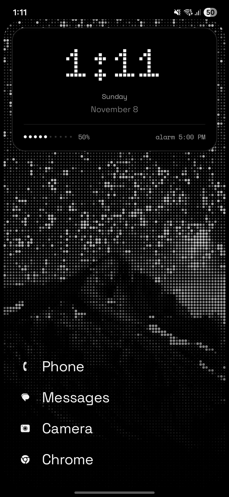
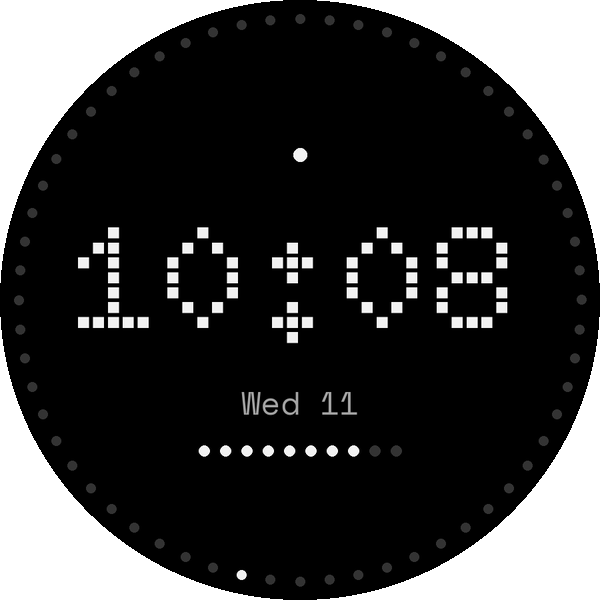

Nilo, an assistant that lives here
Two white eyes in the launcher, and Qwen 3.5 running on this computer, with no account and no cloud. You choose how far it reaches, and before anything with a risk, it asks.
Chat
It answers, looks at this computer and opens apps.
Terminal and repository
A repository of yours: its files, git and the terminal, each change shown first.
The whole system
The desktop as you use it: windows, typing, music, the volume, the phone.

The phone and the watch, as decks
NIHIL Launcher on Android opens this computer's apps, plays its music and is its trackpad, and Vector carries a text, a picture or a file either way. The watch keeps its music and its volume on the bezel.



Install
Each machine keeps what is its own in /etc/nixos; NIHIL comes from here, and updates never touch what is yours.
With the installer
The ISO is in Releases. Write it to a USB stick and boot it: it asks a few questions, finds the screens and the GPU, and makes room next to Windows or takes a whole disk.
ReleasesOn a NixOS you already have
Clone it, give the machine its flake and rebuild. Then one command keeps it current.
nihil update # the latest NIHIL, then rebuild
nihil rebuild # your changes to /etc/nixosMade of greys
Greys for hierarchy, dots for display, red only to interrupt. One file holds the tokens, and GTK, the terminal, the viewers, the compositor, the lock screen, the boot splash and the shell are made from it.
- Void
#000000 - Surface
#0E0E0E - Raised
#1A1A1A - Line
#2A2A2A - Off
#333333 - Muted
#7A7A7A - Dim
#A3A3A3 - Ink
#F2F2F2 - Signal
#D71921